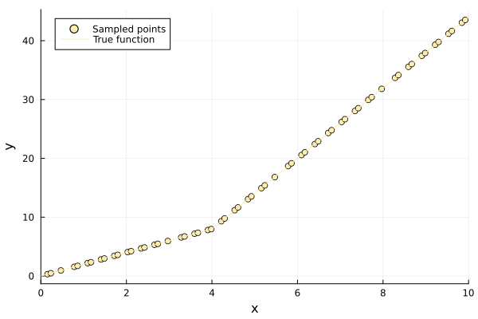
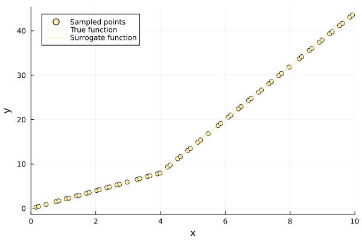
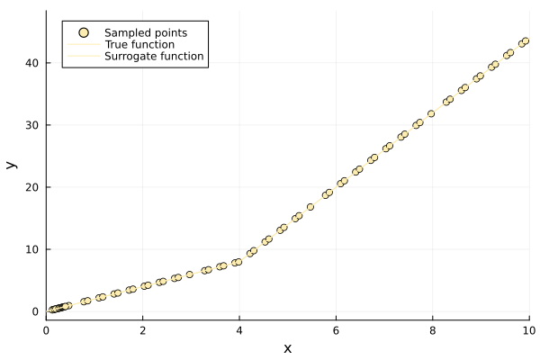

Earth (MARS) Surrogate Tutorial
EarthSurrogate implements multivariate adaptive regression splines. The model is a sum of hinge functions about the mean response,
$\hat f(p) = \bar y + \sum_t c_t \max(0, \pm(p_{j_t} - k_t))$
so it is piecewise linear with breakpoints — knots — placed at sampled coordinates. Unlike a polynomial fit, it puts its flexibility only where the data asks for it, which makes it a good choice for responses that change character across the domain: a kink, a plateau, a change of slope.
Surrogates.EarthSurrogate — Type
EarthSurrogate(x, y, lb, ub; penalty = 2.0, n_min_terms = 2,
n_max_terms = 10, rel_res_error = 1.0e-2, rel_GCV = 1.0e-2,
maxiters = 100)Multivariate adaptive regression splines (MARS) surrogate.
The model is a sum of one-dimensional hinge functions about the mean response,
\[\hat f(p) = \bar y + \sum_{t} c_t \, h_t(p), \qquad h_t(p) = \max(0, \pm(p_{j_t} - k_t))\]
fitted by a forward pass that greedily adds reflected pairs — a hinge and its mirror image about the same knot k_t in the same coordinate j_t — followed by backward pruning on the generalized cross-validation (GCV) criterion.
Knots are drawn from the sampled coordinates, so the surrogate is piecewise linear with breakpoints at the data and is continuous but not differentiable there. It is a regression surrogate, not an interpolant.
Fields
x: training inputs.y: training responses.lb: lower bound of the input domain.ub: upper bound of the input domain.basis: selected hinge basis terms, asHingeTerms.coeff: fitted basis coefficients, one per basis term.penalty: generalized cross-validation penalty.n_min_terms: minimum number of retained basis terms.n_max_terms: maximum number of reflected pairs added by the forward pass.rel_res_error: relative residual-error threshold for adding terms.rel_GCV: relative generalized-cross-validation threshold for pruning.intercept: mean response, the value the model takes where every hinge is inactive.maxiters: maximum number of forward-pass iterations.
Arguments
x: sample locations, as numbers for one-dimensional inputs or as equal-length tuples or vectors otherwise.y: observed values atx, one number per sample.lb: lower bound of the input domain.ub: upper bound of the input domain matchinglb.
Keywords
penalty = 2.0: GCV complexity penalty. Each retained term costs1 + penalty / 2effective parameters, so a larger penalty prunes harder.n_min_terms::Int = 2: minimum number of individual basis functions the backward pass will leave in place.n_max_terms::Int = 10: maximum number of reflected pairs the forward pass will add, so at most2 * n_max_termsbasis functions.rel_res_error = 1.0e-2: a candidate pair is added only if it cuts the residual sum of squares by at least this fraction of the current residual.rel_GCV = 1.0e-2: a term is pruned only if dropping it cuts the GCV score by at least this fraction of the current score.maxiters = 100: maximum forward-selection iterations.
Returns
A callable EarthSurrogate supporting update!(surrogate, x_new, y_new), which refits the basis and coefficients after adding observations.
Both passes select hinges in a single coordinate; products of hinges across coordinates — the interaction terms of full MARS — are never formed, so the model is additive in the input coordinates.
Element types
The design matrices are built in float(eltype) of the samples, so Float32 and BigFloat inputs keep their precision and integer or rational inputs are promoted the way \ would promote them. Knots are stored at the samples' own type, so an integer design keeps exact knots.
Differentiability
Evaluation is differentiable in the query point with both ForwardDiff and Zygote. The hinges make the surrogate only piecewise differentiable: at a knot the derivative jumps, and the value returned there is whichever one-sided derivative max selects.
Example
using Surrogates
x = sample(20, 0.0, 5.0, SobolSample())
y = @. 2x + x^2
surrogate = EarthSurrogate(x, y, 0.0, 5.0)
surrogate(3.0)Surrogates.HingeTerm — Type
HingeTerm(dim, knot, mirror)One hinge basis function of an EarthSurrogate: max(0, p[dim] - knot), or the reflection max(0, knot - p[dim]) when mirror is true.
A hinge and its mirror are added as a pair, so together they represent a change of slope at knot rather than a one-sided ramp.
The fit runs in two passes. A forward pass greedily adds reflected pairs — a hinge and its mirror image about the same knot — choosing at each step the knot that most reduces the residual sum of squares. This deliberately overfits. A backward pass then removes terms one at a time for as long as doing so improves the generalized cross-validation score, which charges each retained term 1 + penalty / 2 effective parameters. What survives is the basis.
using Surrogates
using PlotsSampling
A response with a genuine change of slope, which is what the hinge basis is for:
f = x -> x < 4 ? 2x : 8 + 6 * (x - 4)
lb = 0.0
ub = 10.0
n = 60
x = sample(n, lb, ub, SobolSample())
y = f.(x)
scatter(x, y, label = "Sampled points", xlims = (lb, ub), legend = :topleft)
plot!(f, label = "True function", xlims = (lb, ub))
Building the surrogate
earth = EarthSurrogate(x, y, lb, ub)
scatter(x, y, label = "Sampled points", xlims = (lb, ub), legend = :topleft)
plot!(f, label = "True function", xlims = (lb, ub))
plot!(earth, label = "Surrogate function", xlims = (lb, ub))
The target here is piecewise linear, so it lies in the span of the hinge basis and is tracked closely — to about 0.1% of the response range. It is not reproduced exactly, because knots are drawn from the samples and no sample falls precisely on the kink at $x = 4$; the surrogate places its knot at the nearest sampled coordinate instead.
Reading the basis
The retained terms are available, and say where the surrogate decided the response changes slope:
earth.basis4-element Vector{Surrogates.HingeTerm{Float64}}:
Surrogates.HingeTerm{Float64}(1, 5.78125, false)
Surrogates.HingeTerm{Float64}(1, 5.78125, true)
Surrogates.HingeTerm{Float64}(1, 3.984375, false)
Surrogates.HingeTerm{Float64}(1, 3.984375, true)Each is a Surrogates.HingeTerm carrying the coordinate it acts on, its knot, and whether it is the mirrored half of a pair. The intercept is the mean response, the value taken where every hinge is inactive:
earth.intercept, sum(y) / length(y)(17.582291666666666, 17.582291666666666)Controlling the fit
n_max_terms caps how many reflected pairs the forward pass may add, and penalty sets how hard the backward pass prunes. A heavier penalty buys a smaller, smoother model:
coarse = EarthSurrogate(x, y, lb, ub; penalty = 50.0, n_min_terms = 1)
length(coarse.basis), length(earth.basis)(1, 4)rel_res_error and rel_GCV are relative thresholds: a pair is added only if it cuts the residual sum of squares by at least that fraction of the current residual, and a term is pruned only if dropping it improves the GCV score by at least that fraction. Both are therefore invariant to the scale of y.
Adding samples
update!(earth, 10.5, f(10.5))
earth(10.5), f(10.5)(47.00437581897205, 47.0)update! refits both passes from scratch, so the knots are re-selected against the enlarged sample rather than being carried over.
Multidimensional inputs
f_nd = p -> 2 * p[1] + 3 * max(0, p[2] - 5)
lb_nd = [0.0, 0.0]
ub_nd = [10.0, 10.0]
x_nd = sample(60, lb_nd, ub_nd, SobolSample())
y_nd = f_nd.(x_nd)
earth_nd = EarthSurrogate(x_nd, y_nd, lb_nd, ub_nd)
earth_nd((3.0, 8.0)), f_nd((3.0, 8.0))(14.990291967752507, 15.0)Both passes select hinges in a single coordinate at a time; products of hinges across coordinates — the interaction terms of full MARS — are never formed. The surrogate is therefore additive in the input coordinates, and a response that is genuinely interacting, such as $p_1 p_2$, is only approximated by its additive part. For those, prefer a surrogate with a multiplicative basis, such as SecondOrderPolynomialSurrogate or Kriging.
Optimizing
surrogate_optimize!(f, SRBF(), lb, ub, earth, SobolSample())
scatter(earth.x, earth.y, label = "Sampled points", legend = :topleft)
plot!(f, label = "True function", xlims = (lb, ub))
plot!(earth, label = "Surrogate function", xlims = (lb, ub))